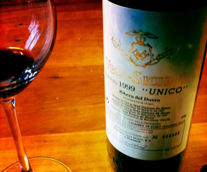

montagsplausch
Rezepte
Getränke
Über
Alle Rezepte
Diverses
Spaniens Grösster
Flasche öffnen und geniessen

Gekocht am Donnerstag, 5. April 2012
Montagsplausch Nr. 329.
Wetter
Regnerisch
Getränke
Vega Sicilia Unico Gran Reserva 1999
Ribera del Duero
Am Tisch
Beni, Gäbi
Dazu gab es
Rindsfilet